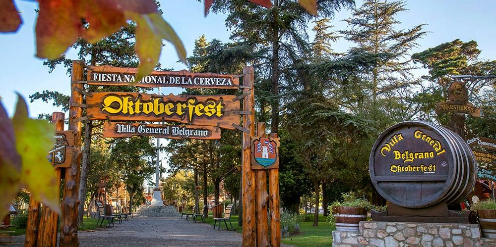
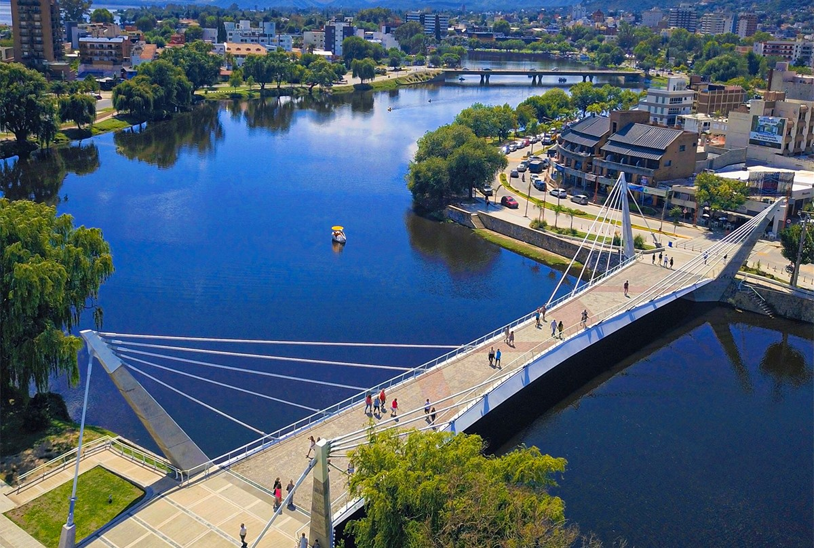

Bienvenido a la provincia de Córdoba!!!
un tesoro natural y cultural situado en el corazón de Argentina. Sumérgete
en un mundo donde la majestuosidad de las montañas, la serenidad de los
ríos, la riqueza histórica de sus pueblos y la calidez de su gente te
invitan a explorar y descubrir un sinfín de experiencias inolvidables.
En cada rincón de esta provincia, desde las imponentes alturas de las
Sierras Grandes hasta los tranquilos valles que acunan a pintorescos
pueblos, encontrarás una historia que contar y un paisaje que admirar.
Córdoba deslumbra con su diversidad, ofreciendo una mezcla perfecta entre
la vibrante vida urbana de su capital y la serena belleza de sus rincones
naturales.
Descubre la fascinante historia de las estancias jesuíticas, testigos
silenciosos del legado colonial que dejaron los misioneros en estas
tierras. Recorre las antiguas capillas que aún conservan su esplendor
arquitectónico, recordándonos la influencia de la fe y la cultura en la
formación de nuestra identidad.
Déjate seducir por la exuberante naturaleza que caracteriza a Córdoba, con
sus senderos sinuosos que serpentean entre árboles centenarios y cascadas
cristalinas que refrescan el alma. Sumérgete en las aguas de sus ríos y
embalses, donde la tranquilidad y la belleza se funden en un abrazo eterno
con la tierra.
No puedes dejar de maravillarte con la imponente vista desde los picos más
altos, donde el viento susurra historias ancestrales y el sol acaricia las
cumbres con su luz dorada. Contempla el atardecer pintando el cielo de
colores que solo la naturaleza puede crear, y déjate llevar por la magia
de este lugar único.
En cada uno de los 12 lugares más bellos que Córdoba tiene para ofrecer,
encontrarás un pedacito de su esencia, una razón para volver una y otra
vez. Prepárate para ser cautivado por la belleza indomable de esta tierra
y por la hospitalidad de su gente, que te recibirá con los brazos abiertos
y el corazón lleno de orgullo por compartir contigo su hogar.
¡Bienvenido a Córdoba, donde los sueños se hacen realidad y la aventura
nunca termina!
Lugares unicos para visitar en Cordoba
Altas Cumbres

Valle de Calamuchita
Capilla del Monte
Cerro Champaqui
Cordoba Capital
Los Gigantes
Mar Chiquita
Pueblo Escondido
Ruinas Jesuiticas
Salinas Grandes
Tuneles de Taninga
Villa Carlos Paz